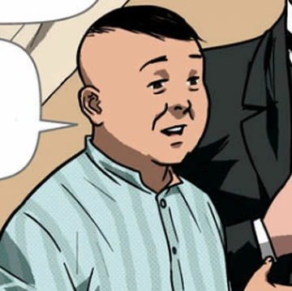
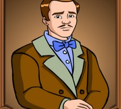
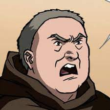
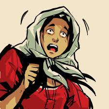
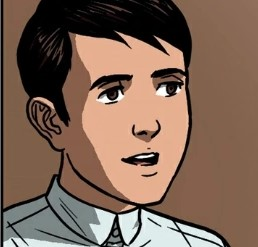
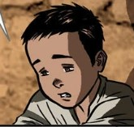

| CHARACTERS IN NOLI ME TANGERE |
|  |
Capitan Tiago |
- The husband of Doña Pia Alba.
- His wife died after birthing his supposed daughter, Maria Clara.
- Is a rich business man who prioritizes social connections.
|
|  |
Don Rafael Ibarra |
- Is the father of Crisostomo Ibarra.
- Was accused of being an erehe and filibuster.
- Died in jail because of sickness.
|
|  |
Father Damaso |
- Used to be the town curate of San Diego.
- Is the actual father of Maria Clara.
- He ordered a gravedigger to tranfer the body of Don Rafael(Crisostomo's father) to a Chinese cemetery.
|
|
Father Salvi |
- Was assigned to be the town curate of San Diego after Father Damaso was reassigned.
- Was in a feud with the alferez of the Gaurdia Civil.
- Discovered that Padre Damaso was the real father of Maria Clara
|
|  |
Sisa |
- Has a husband named Pedro and two kids named Basilio and Crispin.
- She and her kids were abused by her husband.
- She went mad after her two kids went missing.
|
 |
Maria Clara de los Santos |
- Is the fiancee of Crisostomo Ibarra.
- The Daughter of Father Damaso and Doña Pia
- Is known to be super religious.
|
 |
Juan Crisostomo Ibarra y Magsalin |
- The son of Don Rafael Ibarra
- The childhood friend of Maria Clara
- He left the Philippines to study in Europe in the year 1874
|
|  |
Basilio |
- Is the son of Sisa and the older brother of Crispin.
- Is a sacristan, along with his brother, at the San Diego parish.
- He did not like his father and did not include him in his plans for the future.
|
|  |
Crispin |
- Is the youngest in his family.
- The sacristan mayor accused him of stealing two gold pieces.
- He was beaten up by the sacristan mayor as punishment for "stealing."
|
 |
Don/Sage Tasio |
- Studied philosophy at Colegio de San Jose
- Was forced to choose between being a priest or abandoning his studies because of his mother.
- Was seen as a crazy lunatic by the people of San Diego.
|